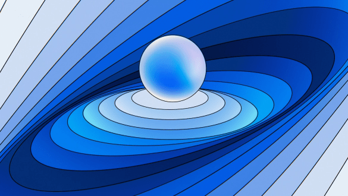

[반도체 후공정 4편] 반도체 패키지의 종류 (4/11)
반도체 공정은 웨이퍼를 제조하고 회로를 새기는 전공정, 칩을 패키징하는 후공정으로 나뉜다. 이중 후공정은 반도체 미세화 기술이 한계점에 다다른 현시점에서 중요성이 점점 더 커지고 있다. 특히, 새로운 부가가치를 만들 수 있는 핵심 기술로 주목받고 있다. 뉴스룸은 앞으로 총 11화에 걸쳐 <반도체 부가가치를 올리는 패키지와 테스트>라는 책을 근간으로 반도체 후공정 과정에 대해 살펴보고자 한다. 이번 연재가 업계에 입문하려는 학생들에게는 길잡이가 되는 지침서의 역할을, 유관 업무에 종사하는 분들에게는 이해도를 높이는 안내서의 역할을 할 수 있기를 바란다.(필자 주)